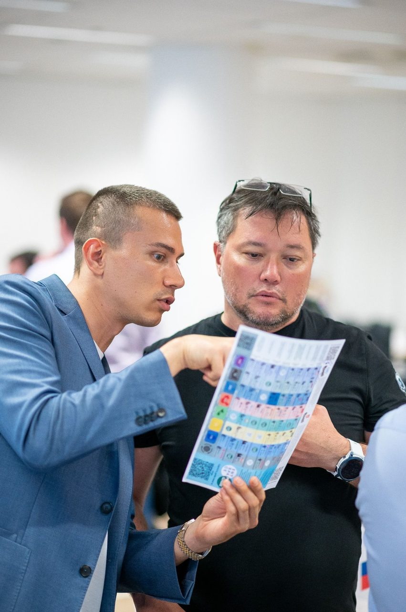

Как формируются предпринимательские навыки
Методология #БольшеСвободы построена на практике: предприниматель берёт инструмент, внедряет его в бизнес, получает обратную связь и формирует новый способ действовать.

Развивается не бизнес.
Развивается предприниматель.
Любой бизнес упирается в потолок собственника: в его навыки, решения и мышление. Можно менять рекламу, нанимать людей и запускать продукты — но пока не растёт предприниматель, бизнес возвращается к прежнему уровню.
Поэтому главный объект развития в школе — это не компания, а человек, который её строит. Сильный предприниматель создаёт сильные бизнесы снова и снова.
Бизнес растёт до уровня навыков предпринимателя: как он видит рынок, слышит клиента, принимает решения, управляет людьми, делегирует и строит систему.
Почему предприниматели застревают
- Развивают бизнес, а не себя как предпринимателя.
- Потребляют знания, но не меняют действия.
- Всё держится на собственнике и его ручном управлении.
- Решения принимаются по интуиции, а не через цифры.
- Нет системы найма, продаж и управления.
- Рост идёт через боль, выгорание и случайный опыт.
Дело не в нехватке информации. Дело в том, что информация не превращается в навыки.
Знания ≠ навыки
Знания могут дать понимание. Но предпринимательский навык появляется только через действие, обратную связь и повторение в реальном бизнесе.
- Книги
- Подкасты
- Курсы
- Вебинары
- Теория
- Лекции
- Внедрение
- Практика
- Обратная связь
- Корректировка
- Повторение
Навык нельзя изучить. Его можно только получить.
Навык появляется не после просмотра урока, а через практику, обратную связь и внедрение в собственном бизнесе.
Если проводить аналогию со спортом — недостаточно знать, как выполнять упражнение. Важно тренироваться, получать обратную связь и повторять. С предпринимательскими навыками всё работает так же.
Мы не библиотека знаний.
Мы среда для тренировки предпринимательских навыков.
Технология недели в #БольшеСвободы
Каждую неделю предприниматель проходит полный цикл: от инструмента до закреплённого навыка и результата в бизнесе.
Инструмент
Предприниматель получает конкретный инструмент под свою программу и ограничивающий навык.
Внедрение
Применяет инструмент в собственном бизнесе: считает цифры, говорит с клиентами, меняет процессы, ставит задачи команде.
Среда
Приносит результат внедрения в среду предпринимателей: показывает, сравнивает, видит чужой опыт и ошибки.
Обратная связь
Получает обратную связь от куратора и группы: что работает, что нет, где точки роста.
Докрутка
Дорабатывает инструмент под свой бизнес и доводит его до рабочего состояния.
Навык и свобода
После повторения цикла инструмент превращается в устойчивый навык предпринимателя — а навык даёт больше свободы в решениях и в бизнесе.
Инструменты — это тренажёры навыков
Каждый инструмент в #БольшеСвободы — это тренажёр конкретного предпринимательского навыка.
Мы используем инструмент, чтобы предприниматель получил новый навык.
Из чего состоит профессия предпринимателя
Маркетинг
Клиент, рынок, каналы привлечения, задачи подрядчикам.
Продажи
Воронка, конверсии, управление отделом продаж.
Финансы
Прибыль, маржа, кассовые разрывы, решения через цифры.
Найм
Выбирать, адаптировать и развивать людей.
Управление
Система, процессы, ответственность и контроль.
Переговоры
Переговоры с клиентами, партнёрами и командой.
Стратегия
Куда растёт бизнес и какие решения ведут вперёд.
Лидерство
Управлять собой, командой и энергией.
Как диагностика определяет следующий навык
Невозможно развивать все навыки одновременно. В каждый момент рост бизнеса ограничивает один-два конкретных навыка предпринимателя.
Входная диагностика предпринимательских навыков определяет, какой навык сейчас ограничивает рост и с чего начинать. Это превращает методологию в понятный персональный маршрут.
- находим главное ограничение роста;
- определяем навык, который нужно развить первым;
- видим, где бизнес теряет деньги и масштаб;
- выстраиваем приоритеты внедрения на 90 дней;
- подбираем программу школы под ваш следующий шаг.